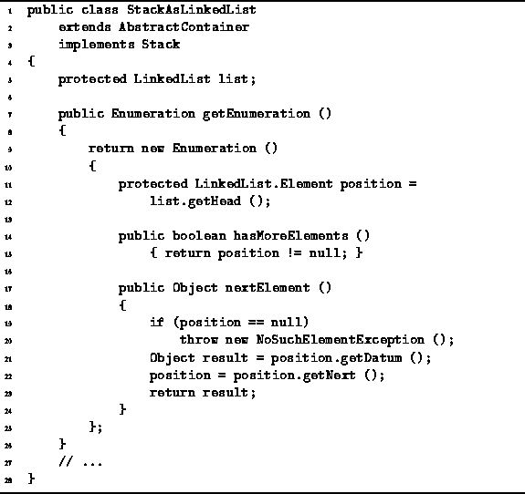

Data Structures and Algorithms
with Object-Oriented Design Patterns in Java
Data Structures and Algorithms
with Object-Oriented Design Patterns in Java
Program  defines getEnumeration method
of the StackAsLinkedList class.
The getEnumeration method returns a new instance
of an anonymous, inner class
that implements the Enumeration interface (lines 9-25).
defines getEnumeration method
of the StackAsLinkedList class.
The getEnumeration method returns a new instance
of an anonymous, inner class
that implements the Enumeration interface (lines 9-25).

Program: StackAsLinkedList class getEnumeration method.
In this case, the Enumeration interface is implemented by defining the field position (lines 11-12) and the methods hasMoreElements (lines 14-15) and nextElement (lines 17-24). The position field is used in the enumeration to keep track of the position in the linked list of the next object to be enumerated.
The purpose of hasMoreElements method is to determine
if there are still more objects in the stack to be enumerated.
In Program this is true as long as
the position is not null.
Clearly, the running time of hasMoreElements is O(1).
The nextElement method returns the next object to be enumerated. It returns the appropriate object in the linked list, provided that the value of the position variable is not null. Otherwise, it throws a NoSuchElementException exception. Clearly, the running time of nextElement is also O(1).
 Copyright © 1998 by Bruno R. Preiss, P.Eng. All rights reserved.
Copyright © 1998 by Bruno R. Preiss, P.Eng. All rights reserved.